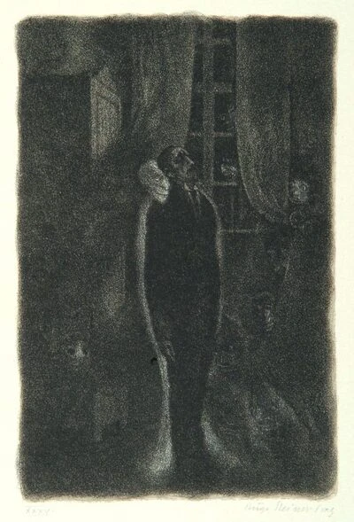
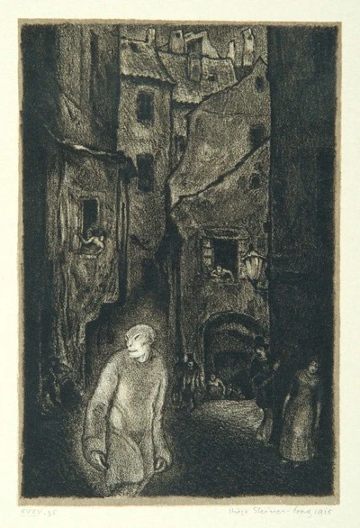
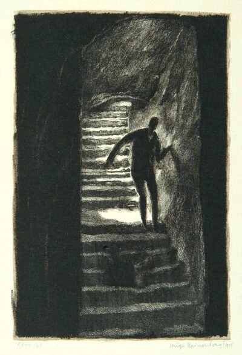
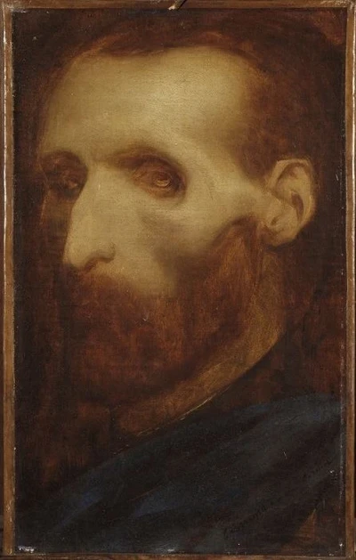
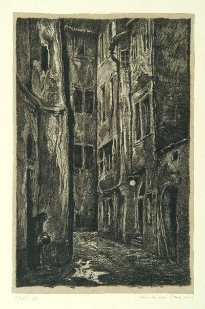
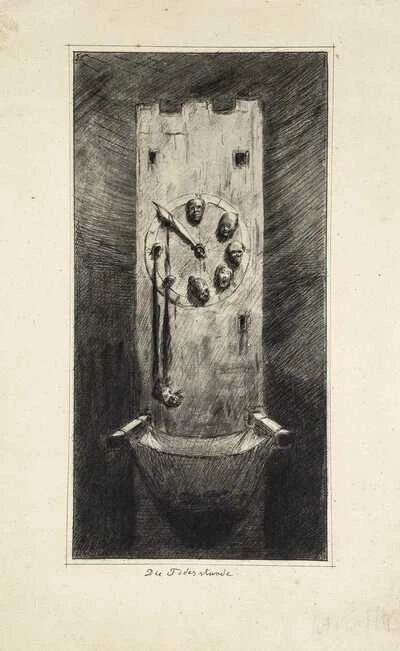
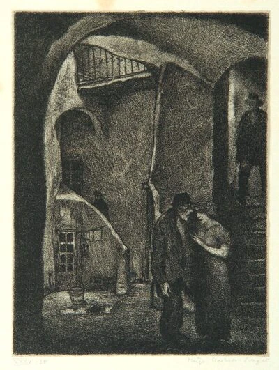
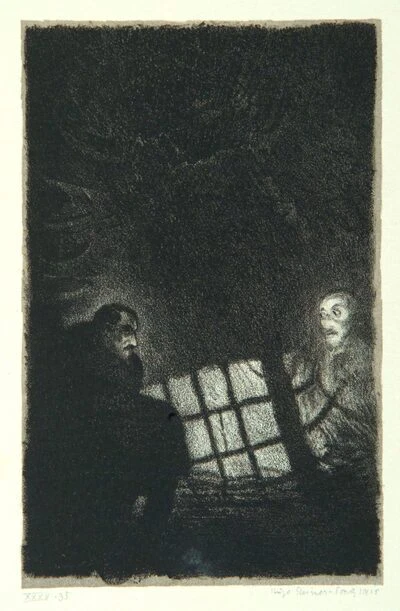

Illustration: Fear by Hugo Steiner-Prag for Der Golem (1916).
Ways I Keep My Sanity
1. Staring at chipped led white on vacant walls in empty hallways.
2. Watching people interact alone.
3. Stepping on shoelaces.
4. Rothko.
5. Wondering when Nippon became Japan and Deutschland became Germany.
6. Walking in circles at dark humid hours of howling nights with neon yellow socks.
7. Growling at squirrels
8. Humming irregular tunes at uneven frequencies.
9. Biting my nails until the corner bleeds bright ripe red.
10. Lexapro.
11. Knowing the queen is dead
12. Making lists
13. Irregularly adding punctuation.
14 ! ,.?*~
15. Making you laugh
16. Writing in form.
17. Writing
18. Rhyming
19. Whining
20. Flying and thinking of dying
21. That was cool right.
22. I lost my sanity already.
23. Make this poem end.
24. If it ends now it will be bad, I’ll keep it going a little longer.
25. Homeless people begging for food to ears shielded with headphones.
26. Knowing it snowed two weeks ago, in Spring, when the flowers should be blooming, and the grass ripening with glowing earth matter green.
27. Christ being into someone with the same name as his mother.
28. Elemental feelings of sporadic amazement.
29. Watching sparrows spar over dry halal on Central Park stone paths
30. Etching my love’s name onto waxed wooden tables.
31. Knowing that Night by Elie Wiesel is non-fiction.
32. Thinking of how to think.
33. Rolling up my sleeves and doing nothing.
34. Stepping on even tiles and avoiding cracks.
35. Dreaming of Carcosa
36. Re-rolling dice
37. Becoming nothing and everything at hours that matter.

Illustration: The Appearance of the Golem by Hugo Steiner-Prag for Der Golem (1916).
How To Create A Golem
Step 1: Grab dusty clay.
Note: Soil soaked in tears is best
Step 2: Put weight of generational hate into clay for 3 minutes.
Step 3: Roll into hollow ball with scarred palm of hand.
Step 4: Collect every bit of belonging in sight, hide history in ball.
Step 5: Make ball into person, but not too much like a person.
Note: If it gains personhood, it will turn on user (see step 12).
Step 6: Create an amorphous identity.
Step 7: Inscribe “Aleph” “Mem” “tav” on stomach.
Step 8: Shout hollow prayer at hollow form, and cry.
Note: Must be in broken Hebrew.
Step 9: Determine where the universe and the self coincide.
Step 10: Decide who is not in said universe.
Step 11: Instruct Golem to protect universe.
Step 12: If user wishes to disable Golem, or if Golem turns on user, wipe away “Aleph”.
Note: This kills Golem.
Step 13: Return Golem to earth after use.
Step 14: Hide beneath floorboard and mourn loss.

Illustration: The Road of Fear by Hugo Steiner-Prag for Der Golem (1916).
My Temple
Blue light gliding across black marble ledges
Red banners weft weighed down
Dark oak scented winds rustle sinister sounds behind the monolith.
Foreign faces illuminated by dental white halal carts buy overpriced franks,
dapper doorman silhouette the hearth of bourgeoise lobbies
Tapering neoclassical pillars are blessed in orange.
Sterile Turnstiles and docile Children.
Beeping and stepping,
Goyard bags are dissected,
and murky mink furs are hung.
Cello players inflate the grand hall in their slick black wool.
The armory, with cock covered plating
and shark skin hilts,
harbors hollow shadows donning robes of silk brocade.
Dozing docents and howling hungers,
Thighs fuzing on waxed wood benches,
Chinese book binding displays,
Adam and Eve’s shame greeting oncomers
to the navy purgatory of paintings.
Varnished silver modeled nude signed Ingres.
Gorgons hanging headless
and Poussin skies Egyptian blue.
Overpriced seltzer and wrinkled janitors.
Footsteps march in unison toward icy squalls
as they exit this temple.

Painting: Self Portrait as a Dying Man by Théodore Géricault (c. 1820).
Self Portrait as a Dying Man by Theodore Gericault
Screaming, shouting, crying, praying,
crying while praying.
Words fall on hollow air,
bouncing,
endlessly seeking,
infinitely lost.
Clasping on to what is familiar,
unfamiliar, and unfair.
Those around us never understand us.
I never understand you. You to me.
Me to myself.
How are we to coexist when our words are lost in the computing of the mind?
How are words formed when emotions don't make sound?
Each word muttered in exhaustion,
each ear deaf from trauma,
each conversation repetitive in translation.
What's the point in screaming
when no one understands the words.
Each bounce morphing the letters, with indiscernible meanings,
undefinable feelings,
finite endings.
I whisper
to the caverns of confused ears.

Illustration: In the Ghetto by Hugo Steiner-Prag for Der Golem (1916).
Financial District – April 21, 2025
Today the pope died,
I kissed the love of my life,
and smiled walking alongside.
I ate infinity in the hole of a doughnut,
chocolate sprinkles,
rotting in the bottom of my gut.
Tattered clothes scattered
across the skin of bare-bodied men.
Consuming in guilt, I chewed till the spit splattered.
There’s cruelty in cyclical existence—
from the barrel of a revolver,
for instance.
I shoot hollow point as an absolver
and tear the earth's garden into bits,
carrying lambs’ limbs up the altar.
Babel isn’t that tall,
they never reached Mars after all.
Humanity never recovered from the fall.
The Trade Center lost its brother,
and the world its mind,
and us our Holy Father.
Specters roam these streets,
dwarfed by sublime glass mirrors,
their souls are lost to the sound of leather Oxford feet.

Illustration: Hour of Death by Alfred Kubin (early 1900s).
Hour of Death by Alfred Kubin
Skin withers,
writhing under watchful eyes.
Sinners clear their throats of lies.
The honest trudge on cement.
The path is clear
as an asphalt maze ridden with tears.
Drinking out of fear,
divinity pulls at the weak with a leer.
Eating for existing,
living and resisting,
the hollow man with his burlap sack of dreams
swiftly swipes sand from perforated lungs that leak like a bust seam.
Moments that shatter the glass of time,
nothing matters.
So dance with thyme, and watch time
be sipped away by unworthy husks that top their glasses with lime.
The cracked glass of opportunities
fragmented by the outstretched hand,
time rules all on water and land,
through cracked desert and melted mud, granite groves that flood,
toes through socks, legs jutting from doorsteps and rooftops,
eyes drained of pigment, clocks that never stop.
The backs of the good,
arched in their domesticated morality,
carrying the weight of the world and everyone that ever stood,
every reality that could have been, and never should.
Overflowing possibility stains hands with regret,
It’s never known what one might get.
Ignorance of potential,
potential for ignorance.
Rewinding souls, the numbers plague the mind,
searching for once was
lost to father time.

Illustration: Vice by Hugo Steiner-Prag for Der Golem (1916).
Things That Make Me Laugh
I find planners funny,
the people that use them are hilarious.
Crisp cotton poplin shirts make me grin,
the rust colored collar behind the sweaty salary man's neck makes me chuckle.
Clean mirrors are detestably funny.
The person in them isn’t,
I pity them.
Polyamory is funny,
and disturbs me.
Hieroglyphic visions are funny until tears saltier than the dead sea glaze my skin.
Penis envy mushrooms had a funny name until they did that.
Therapists are a hoot, howling away at my mind.
My aunt is a therapist, she's not funny, she sucks.
Maybe she doesn’t, but she sure doesn’t make me laugh.
Renoir is funny,
Yoko Ono is funny, and an ass.
I don't think Julian found her very funny,
nor did Sir Paul.
TItles are funny.
The monarchy is funny.
The Queen's death had me laughing in the dark.
Funerals make me giggle.
My dad was crying at my uncle's open casket.
It wasn’t funny then.
Heaven is funny as a concept.
Churches are funny with their tall walls and paper thin skinned women praying away.
Signs are funny,
so are speed bumps when my hydraulics propel my ass off the wrinkled leather seat.
Jeff Koons is so funny he makes me red with anger.
The blood stain of an ex lover on my thin sheets had me crying out of laughter.
My life is funny,
and this poem isn’t.

Illustration: Night Ghost by Hugo Steiner-Prag for Der Golem (1916).
Dear Black-Eyed Angel
It’s been a while
since I’ve seen your pale-bodied manner
and chalk-white bones.
The gravity of your heart pulls me into its cold caverns
of egomania-fueled etchings
on icy walls,
in shadows.
I thought you should know,
I found your wings.
They sit on the silver scale.
I wish they were intact,
so you could fly back.
This pit, dug deep beneath your pale feet,
filled with the pain of thin metal sheets,
can’t possibly be good for you.
I’m not trying to hurt you.
In that cavern, do you have light?
I hope you care enough to eat.
I can hear your pangs ringing under dusty shelves
and unkempt hallways.
I'm still wounded from those serif-tipped daggers
you shouted across.
My supple skin was sliced into soft slits of red,
crying until I couldn't see,
until this paper was doused and dampened with heavy bombs of crimson.
We’re all stressed in this madhouse—don’t feel special.
You don’t need wings
when the sky rages flame and soot.